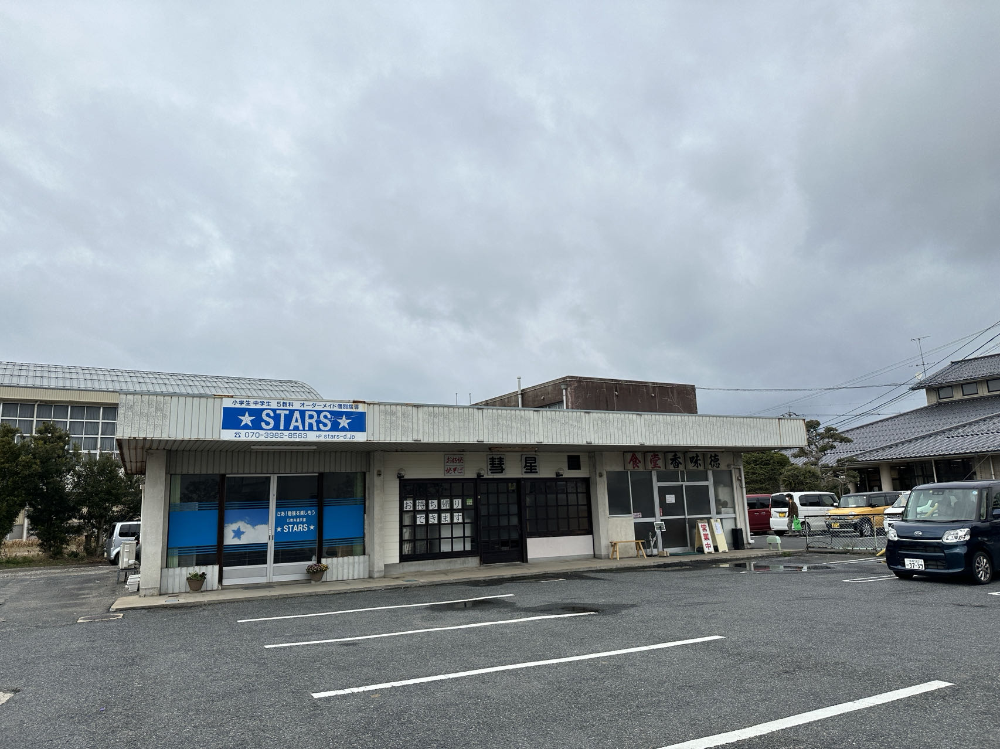
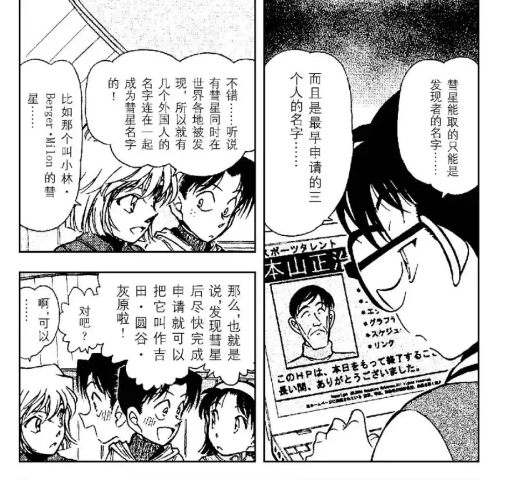
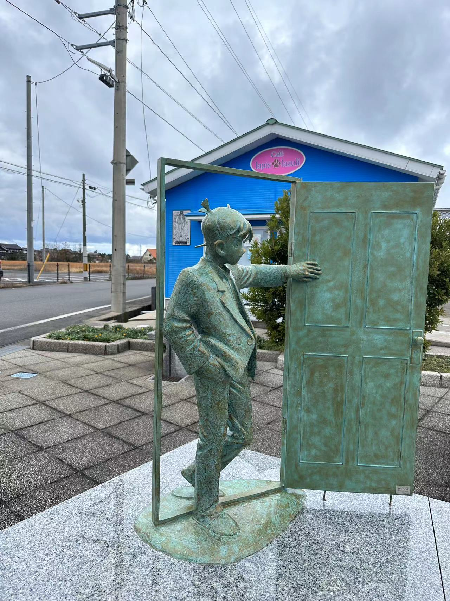

动森贴挺久没更了，视频也在剪了。。。。。。怕大家无聊，发个新帖。
最近楼主安排了一次鸟取旅行（使用社畜的宝贵年假），发现了许多有趣的场外信息，分享给大家。不是一个旅行分享贴所以不会写太多观光的部分，只挑了分析相关的有趣的信息。
先用超级白兔号的新志镇楼。（坐了，嘻嘻。）
最近楼主安排了一次鸟取旅行（使用社畜的宝贵年假），发现了许多有趣的场外信息，分享给大家。不是一个旅行分享贴所以不会写太多观光的部分，只挑了分析相关的有趣的信息。
先用超级白兔号的新志镇楼。（坐了，嘻嘻。）
先从鸟取必去的柯南小镇开始。
一出由良站，就看到这三家并列的小店。
食堂香味德没什么好说的，鸟取有名的拉面牌子。
叫做stars的补课班，和彗星的小吃店，有点意思。
到底什么小吃店会叫彗星啊（纯吐槽）
然后看板上的，お好焼 焼そば 首尾相连了。。。联系起彗星起名的那话。。。我又要推一下我的新志北斗星说了。。。不懂的去看一下动森楼哈。。。

店名1.STARS 2.彗星 3.食堂香味德食堂香味德没什么好说的，鸟取有名的拉面牌子。
叫做stars的补课班，和彗星的小吃店，有点意思。
到底什么小吃店会叫彗星啊（纯吐槽）
然后看板上的，お好焼 焼そば 首尾相连了。。。联系起彗星起名的那话。。。我又要推一下我的新志北斗星说了。。。不懂的去看一下动森楼哈。。。
补充一下彗星起名的星星系列。

然后遇到了这只猫，emmm车站附近常驻民的样子，在问店家要吃的。是你吗虎影？
2024-03-07 08:06 | 夜雨东来山月和:这猫真是一模一样啊2024-03-07 10:11 | 玉雨哦:可爱2024-03-07 10:56 | 光源刀:回复 雁影◇妃 :玳瑁猫耶，好可爱2024-03-07 11:45 | NCC74656Voyage:这猫就是原型吧？2024-03-11 11:18 | 望西都♤E安情:猫能活这么久吗
又开始发不出来了= =
走到工藤新一铜像这里，发现了有趣的东西。
走到工藤新一铜像这里，发现了有趣的东西。

这个蓝色的房子是一个占---卜咖啡店，我在狗狗---地图搜了一下外面的装饰是会变的。不过这个塔---罗---牌的位置实属刻意。在正面的边边就这么一张，刚好可以从新一的门里看过去。
2024-03-07 06:57 | 贴吧用户_0Q8721R:塔罗牌 正义 11 天平和剑 扑克牌J2024-03-07 10:44 | 贴吧用户_0795E8E:真就西式魔法的魔术师。 justice是11的话应该是用Rider–Waite Tarot 体系。2024-03-11 06:54 | 雁影◇妃:补充一下，左手持剑，右手拿枰的还有可能是大天使米迦勒，也就是金苹果篇的特洛伊王子对应的角色。
店内供大家参考，摆着柯南的漫画，感觉小镇的店家都和老贼有某些关系。
2024-03-08 04:36 | 奥斯丁格理芬:也许就是同学
牌面JUS 正 TI 义 CE
很适合新一的一张牌。具体牌---面含义请看百度百科，大家可以自行解读。
注意牌上是雅典娜哦。
很适合新一的一张牌。具体牌---面含义请看百度百科，大家可以自行解读。
注意牌上是雅典娜哦。
前排
走到侧面还有三张，远远拍了下，因为当时刚来玩，没多想。。。
分别是：THE EMPRESS, JUDGEMENT, THE EMPEROR
三张牌面如下，我不擅自解读了，大家自行判断是否算是有效场外信息吧。纯分享。（这人剪视频剪得没空翻书：D）
三张牌面如下，我不擅自解读了，大家自行判断是否算是有效场外信息吧。纯分享。（这人剪视频剪得没空翻书：D）
2024-03-07 07:52 | bearaven:金星、冥王星、木星 皇帝加强牌，星币四2024-03-07 10:16 | bearaven:全是正位置2024-03-07 10:19 | bearaven:“审判”出现在这里。也完全对应得上。快了。
哇赶上直播了
柯南小镇的部分就没发现什么了，青山刚昌故乡馆值得一去，里面有老贼的生平，非常有助于读者了解他的人生经历和创作的底色。
然后我去了鸟取有名的白兔神社，也是因幡的白兔典故的那个神社。 因幡白兔截了一下大概，具体自行百度。主要讲兔子踩着鳄鱼（鲨鱼）过河，被鳄鱼（鲨鱼）剥下了皮。后被大国主神医治好并报恩的故事。
然后我去了鸟取有名的白兔神社，也是因幡的白兔典故的那个神社。 因幡白兔截了一下大概，具体自行百度。主要讲兔子踩着鳄鱼（鲨鱼）过河，被鳄鱼（鲨鱼）剥下了皮。后被大国主神医治好并报恩的故事。
2024-03-07 07:32 | 贴吧用户_0Q8721R:回复 雁影◇妃 :因幡的白兔在蜘蛛公馆案里提到过2024-03-08 02:50 | huiyuan志保:发现了一只小猫
白兔神社门口这里有兔子踩在鲨鱼上过河的画面，这个我之前应该是在网上看过，但那时还没有兔子论，所以那时没什么感想。
这次亲眼见到还是有点震撼，尤其在我从神社出来沿着白兔海岸走时，发现这个小镇就是一个大型的兔子鲨鱼元素村。。。
好像是个学校外面的墙画。。。
2024-03-07 10:12 | 玉雨哦:牛
然后来到了鸟取站，发现强推的伴手礼有两个大方向。
一个是因幡白兔相关的白兔小蛋糕。 另一个主打星星点心。。。。。。等等什么是星取县啊。。。。。。不是鸟取吗？
一个是因幡白兔相关的白兔小蛋糕。 另一个主打星星点心。。。。。。等等什么是星取县啊。。。。。。不是鸟取吗？
哦，原来鸟取县为了宣传自己的流星雨，给自己取了个别名“星取县”
合着老贼老家这点元素，兔子，鲨鱼，星星，全给新志了。。。
2024-03-07 07:57 | bearaven:反过来说，即使没到现场，分析也能把这些元素都提取出来。也算一种安乐椅2024-03-07 10:12 | 玉雨哦:hoshi2024-03-08 04:16 | Yao_CPT:太有意思了！2024-03-08 08:07 | 贴吧用户_GGXM4yS:下次营销号再说老贼对哀没有哀就直接：青山老家三大记忆点：鲨鱼——“我这样的坏鲨鱼”；兔子——生肖贺图里兔年是哀的单人图；星星（hoshi）：志保（shiho）2024-03-09 19:57 | 贴吧用户_71K2MyM:回复 贴吧用户_GGXM4yS :这不是可以给ca立场的营销号供稿2024-03-09 20:02 | 贴吧用户_GGXM4yS:回复 贴吧用户_71K2MyM :emmm，很少看见有ca立场的营销号2024-03-09 20:24 | 雁影◇妃:回复 贴吧用户_71K2MyM :柯哀分析不适合用营销号这种东西来参一脚，理解成本太高了，云只会说你YY2024-03-09 22:15 | 贴吧用户_71K2MyM:这倒是，两位说的有理。
厉害了！！！圣地巡礼！！！
这个小镇怎么有种现实版动森的感觉
2024-03-07 07:31 | 雁影◇妃:我走在里面也有这种感觉2024-03-07 09:18 | 贴吧用户_0yVME5Z:还真是2024-03-08 01:28 | SparkFeeling:哇 确实诶
厉害了
73老家是鸟取？我怎么记得漫画里头也暗示黑衣组织的老巢也在鸟取啊
2024-03-07 08:04 | 李洪恺666:破案了，青山就是组织的首领2024-03-07 08:14 | 林中的熊宝宝🐨:回复 李洪恺666 :必须靠柯哀之间的爱感化首领才能达成结局2024-03-07 10:34 | 贴吧用户_0795E8E:这个可以看我对组织boss的揣测，但是有点过期需要重新整理2024-03-08 08:08 | 贴吧用户_GGXM4yS:回复 李洪恺666 :那某种意义上可以2024-03-10 06:03 | 放假最快乐:青山说过鸟取与酒厂boss无关
原来有在剪
这个不错。 可以去一下白兔海岸，周边还有若樱（读wakasa~若狭）可以看樱花
现实版动森 ？
？
？前排（可能

哇
两边都轻轻催更一下
有意思欸，
兔子意向还蛮多
。
。
。
。

直播吗？期待
到时候给个bv号
旅行愉快
不是直播，楼主已经回来了 只有以上
只有以上
只有以上柯哀圣地

有趣

好棒！有机会一定要亲眼去看看~
tmd，🐰🦈还在追我
哇哦
哇塞
鸟取县别名星取县可还行，柯子啥时候摘星星就好了
（）瞄了一眼贴子：青山老家的人真会脑补啊
一说霓虹的鸟取县就想到青山和名柯了
兔鲨